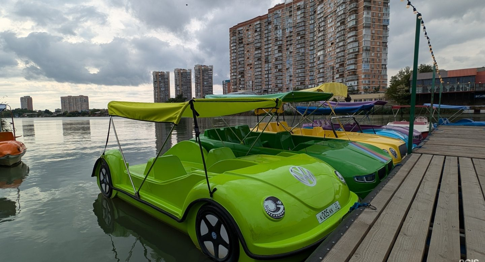
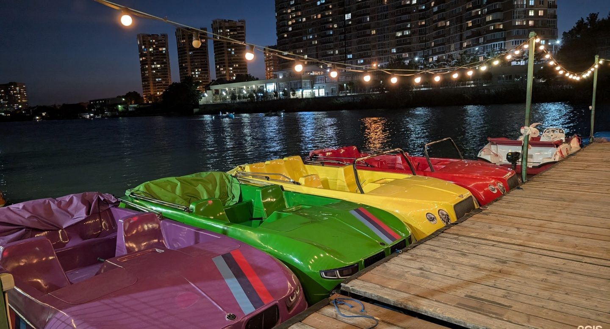
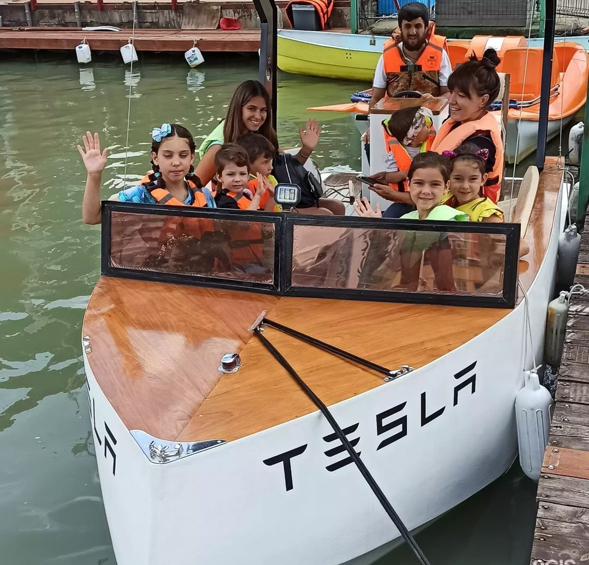
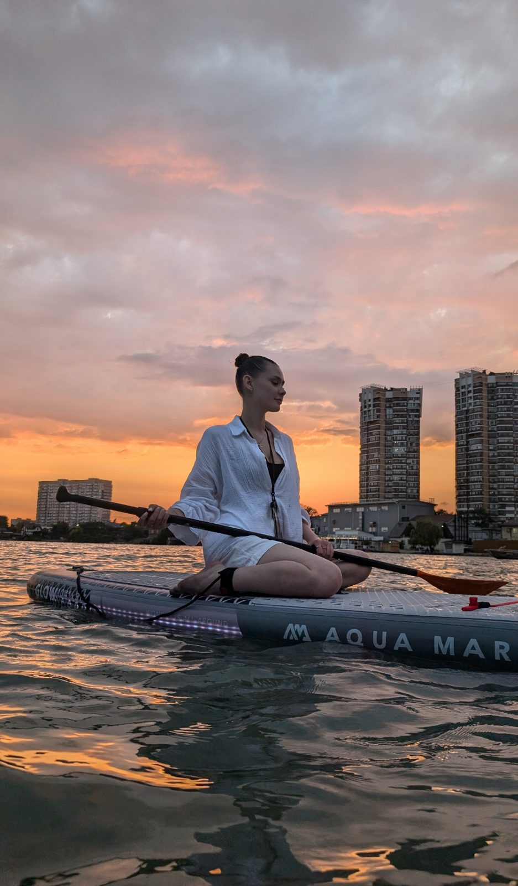
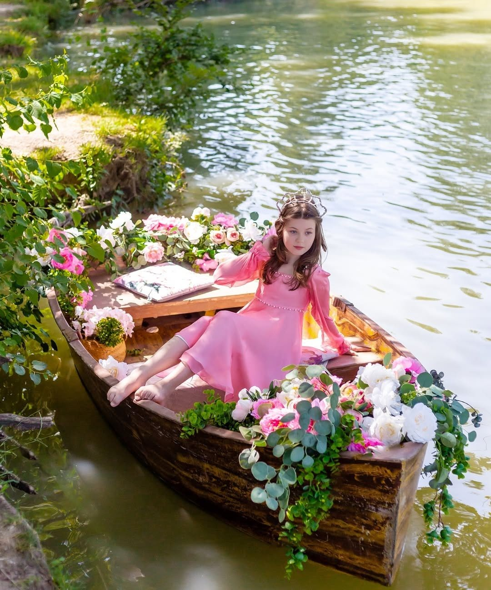
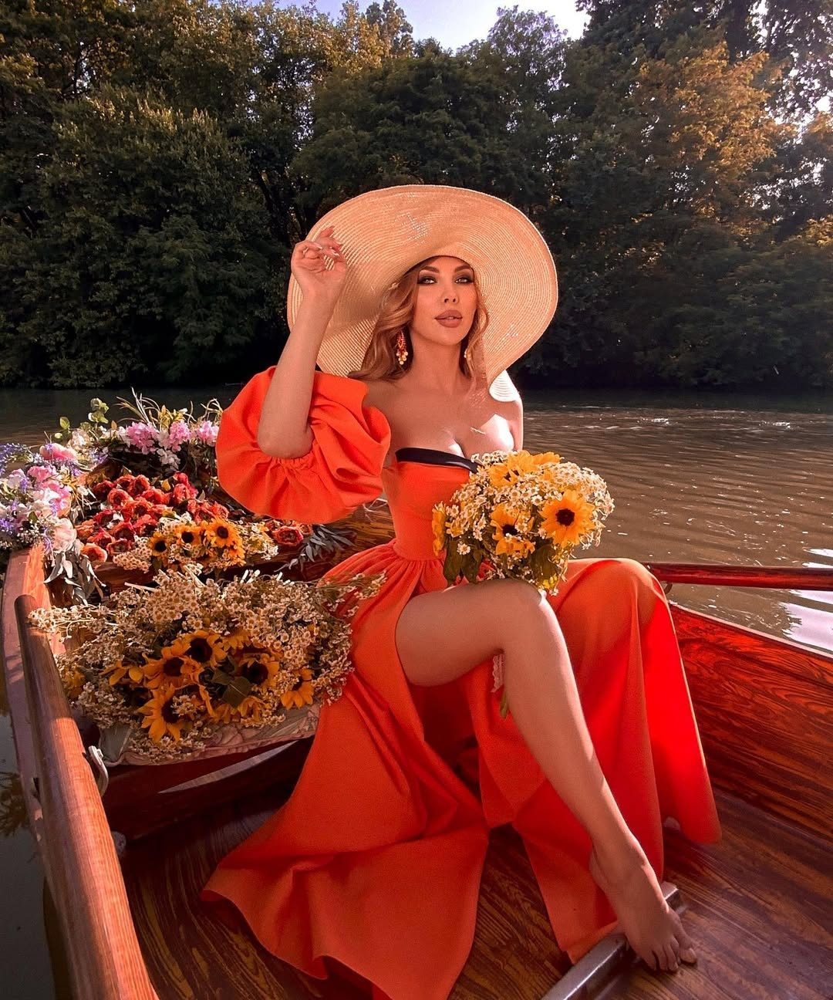
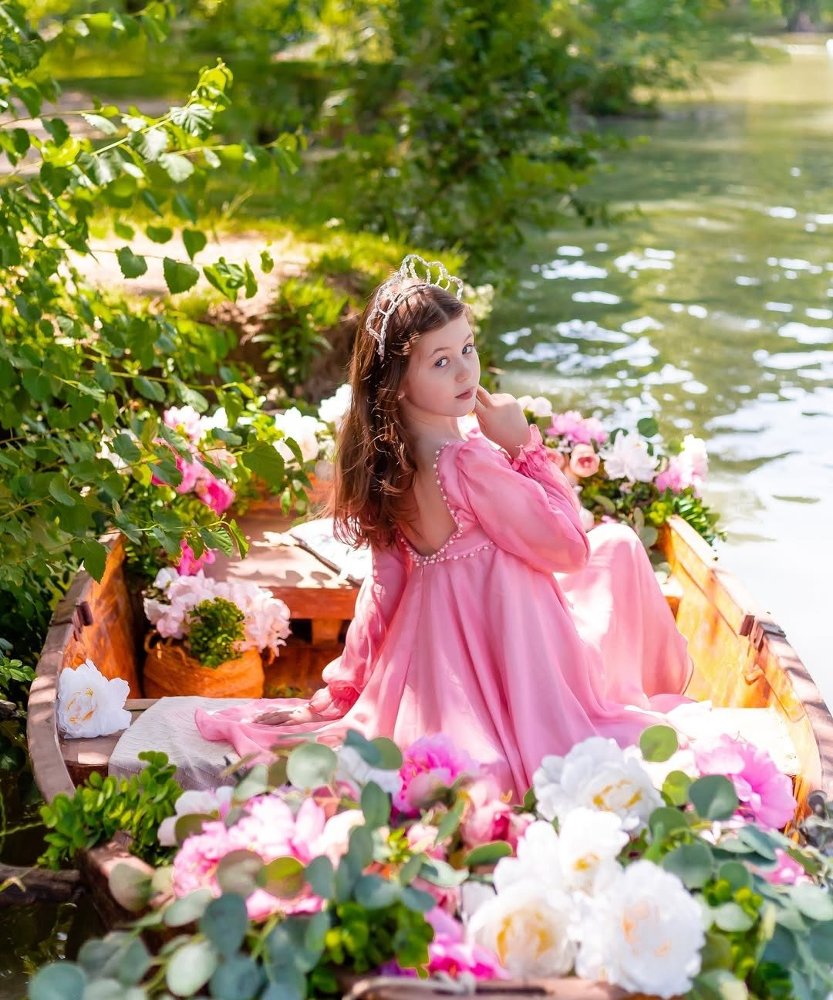

Катамараны
- Электрокатамаран1 500 ₽
- Педальный «Бентли» / «БМВ»800 ₽
- «Дельфин», 4-местный500 ₽

Электрокатамараны, катер «Тесла», ретро-катер, SUP на закате и ночью, лодки для фотосессий и романтических свиданий. Педали крутить не обязательно — есть электро.
★★★★★
196 оценок в 2ГИС
за прогулку
«Никакой качки, никакого шума моторов — только плеск воды и пение птиц», — София Борисовна.



Цены — из прайса в 2ГИС (обновлён 18 сентября 2026). Длительность и точную стоимость уточнит администратор при бронировании.



Украшенная лодка для фотосессии, романтическое свидание на воде или просто прогулка на вёслах.
Поездка на катамаране по реке — идеальный способ замедлиться и отдохнуть от городской суеты. Никакой качки, никакого шума моторов, только плеск воды и пение птиц.
Очень хорошее обслуживание, вежливый персонал, прогулка на катамаранах просто супер — можно даже включать свою музыку. 10 из 10!
Всё понравилось. Отличный аттракцион. Есть цветущие лилии и почти ручные дикие утки. Интересно. Рекомендую.
Крутой прокат, всё работает, всё чисто, безопасно. Персонал приятный!
Хорошие катамараны, есть электрические и катер. Вежливые сотрудники.
Приветливый коллектив, всё подсказали и объяснили. Первый раз в городе и парке, но точно вернёмся вновь, чтобы получить впечатления.
За Перевёрнутым домом · Краснодар, Центральный округ
Сб–вс 10:00–20:00 · оплата картой, наличными, переводом, по QR